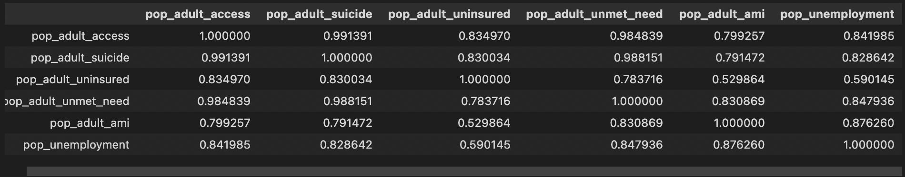
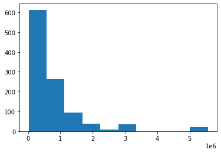
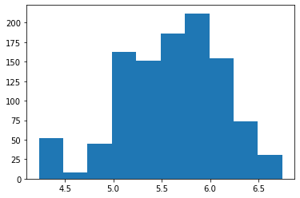
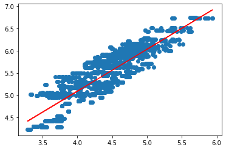
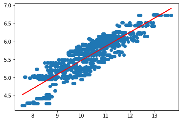
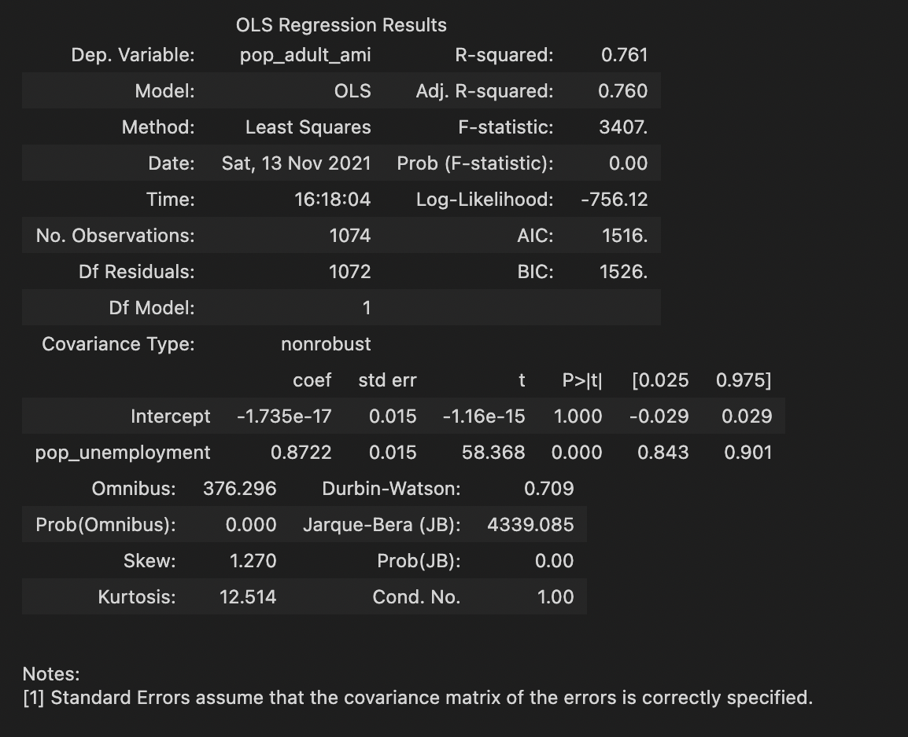

Preliminary Test
- Before we getting into the complexity of machine learning, we want to quickly test out there is a strong correlationship between these data. So we used python pandas seaborn and numpy functions to run a quick stats check.
- Researchers found that between any_mental_health_pop and unemploment population, there is 0.87 correlation coefficient. Given the strong evidence of the data, we move on with our linear regression model.

Machine Learning: Normalization
- After the merge, when combining the data, researchers got rid of the null values caused by missing informaion..
- First we want to make sure our data has a normal distribution using a matplotlit histogram, researchers found their data heavly skewed as the following:
- So our first step is to normalize the data by using numpy log10() function as the follwoing:


Machine Learning: Model Test #1
- Mean squared error (MSE): 0.07728
- R-squared (R2 ): 0.746550
- Model Score: 0.728
Researchers used a single year's worth of data for mental_health_cases and 2020 unemlpoyment data

Machine Learning: Model Test #2
More data being added showed increased efficiency in testing
- Mean squared error (MSE): 0.06796 (Improved 12% from model 1)
- R-squared (R2 ): 0.7530
- Model score: 0.769 (Improved 6% from model 1)
Researchers used a single year's worth of data for mental_health_cases and 2020 unemlpoyment data

Machine Learning: Model Test #3
In order to continue finding the best model, researchers introduced an ols model from statsmodels.formula.api
- Kurtosis, a measure of whether the data are heavy-tailed or light-tailed relative to a normal distribution, looks high even after utilizing sklearn preprocessing.
- After graphing the data, it appears as though the use of log is required to achieve a normal distribution.
- Model score: 0.769 (Improved 6% from model 1)
Preprocessing through SKLearn was utilized to create more normalized data.

Machine Learning: Model Test #4
With log10 normalized data and excluding workforce again
- This model has Adj. R-squared: 0.753
- Low std error of 0.016
- Low Kurtosis: 2.168

Machine Learning: Model Test #5
Introducing additional attribute of healthcare_workforce population per state
- Researchers did similair data processing to remove the null/duplicates data. The total number of rows dropped by 200, but still researchers had more than 800 rows data.
- Researchers used the same Model4 to see just the normalized ami and unemployment for the 2 years of data. 2020-2021 model yield 0.84 adj.R-squared as the highest, and std error remianed low at 0.012.
- As COVID impacted unemployment rate significantly along with mental health of US population, it might have a higher correlation compared to 2019.
- In order to have a more accurate rate on the ami with slightly more data and based on our earlier correlation stats result, researchers decided to bring in health_care workforce back into the model.
Researchers only had 2020-2021 data, so initial 2019 data needed to be excluded from our previous table and joined with workforce data.